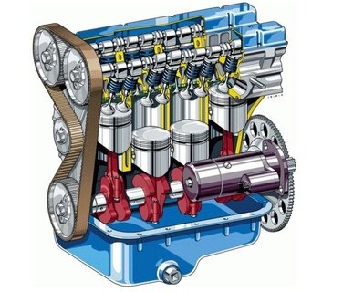
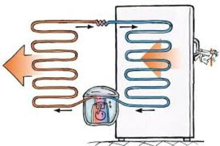

История открытия закона
В XVII веке Галилей заметил, что шар, катящийся по наклонной плоскости, достигает почти той же высоты, с которой начал движение, — это стало основой идеи сохранения энергии. Первые идеи о сохранении энергии появились в работах таких ученых, как Готфрид Лейбниц и Герман фон Гельмгольц. Они показали, что энергия может превращаться из одной формы в другую, но общее количество энергии в замкнутой системе остается постоянным. Внутренняя энергия, которая включает в себя кинетическую и потенциальную энергию частиц системы, также подчиняется этому закону. В XIX веке эксперименты Джеймса Джоуля и Юлиуса Майера доказали, что механическая энергия может превращаться в тепловую, а Майкл Фарадей связал её с электричеством. Окончательно закон сформулировал Герман Гельмгольц в 1847 году, объявив энергию универсальной сохраняющейся величиной.
Основные принципы закона
Закон сохранения внутренней энергии является частью первого закона термодинамики. Он утверждает, что в изолированной системе (без обмена энергией с окружающей средой) внутренняя энергия остается постоянной. Внутренняя энергия системы может изменяться за счет работы или теплообмена, но сумма всех видов энергии в системе остается неизменной
Закон сохранения внутренней энергии выглядит следующим образом:
Eк1+ Eп1 = Eк2 + Eп2
Где: Eк1 и Eк2 — кинетическая энергия системы в начальный и конечный моменты времени, Eп1 и Eп2— потенциальная энергия системы в начальный и конечный моменты времени.
Области применения закона
Закон сохранения внутренней энергии используется в термодинамике и инженерии. Например, в холодильниках и кондиционерах тепло передается от одного тела к другому, что приводит к изменению внутренней энергии системы. В двигателях внутреннего сгорания химическая энергия топлива преобразуется в тепловую, а затем в механическую энергию, что также подчиняется закону сохранения энергии. На гидроэлектростанциях вода, падая с плотины, преобразует потенциальную энергию в кинетическую, вращая турбины.
